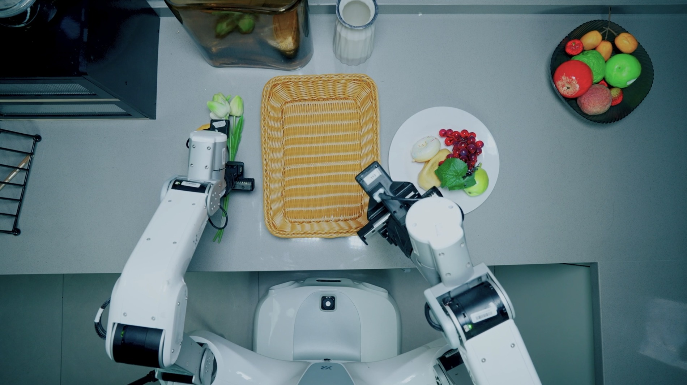
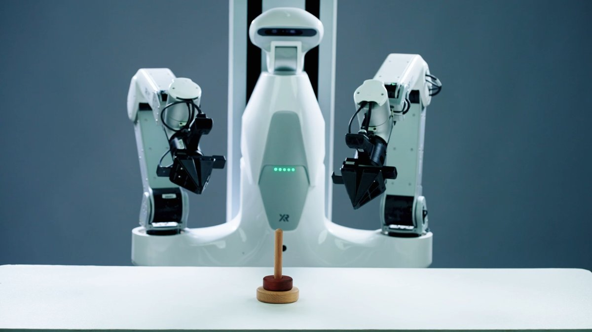
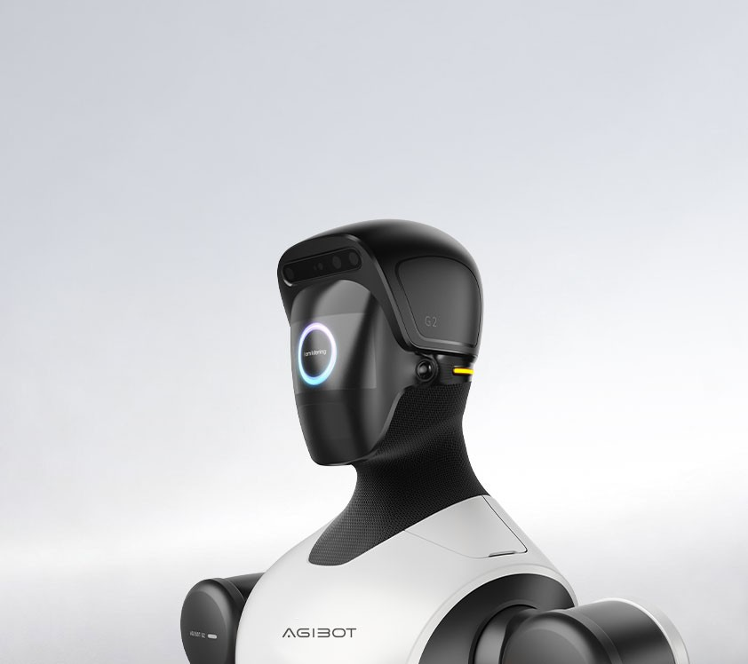

X Square Robot · robot AI model
WALL-WM
China · 2026
Runs on QUANTA X2 by X Square Robot · QUANTA X1 PRO by X Square RobotSource and note: QUANTA X2 (X Square Robot), QUANTA X1 PRO (X Square Robot)A arxiv.org/pdf/2606.01955 · Retrieved
Sources retrieved: (A, B, C)
- Model type
- World action modelSource and note: Model typeB raw.githubusercontent.com/X-Square-Robot/wall-x/main/README.md · Retrieved Note. Wall-X README: “a World Action Model that couples future-video imagination with action prediction at semantic event boundaries.”
- What it controls
- Arms and handsSource and note: What it controlsA arxiv.org/pdf/2606.01955 · Retrieved Note. Real-robot evaluation uses bimanual manipulation arms: “The real-robot evaluation is conducted on the high-performance tabletop bimanual robot arms from the internally developed deployment platform suite (Fig. 7).”
- Inputs
- Camera Language Robot stateSource and note: InputsA arxiv.org/pdf/2606.01955 · Retrieved Note. Paper formalizes WALL-WM inputs as multi-view camera observations, proprioceptive robot state, and per-event language captions: “where V0 is the current multi-view observation (one keyframe per camera), s the current proprioceptive state”
- Base model
- Wan Series / Qwen3.5-9BSource and note: Base modelA arxiv.org/pdf/2606.01955 · Retrieved Note. Paper architecture uses “a video tower inherited from a Wan Series text-to-video model” paired with a reasoning module: “Our reasoning module is constructed on top of a Qwen3.5-9B backbone”.

Specifications
7 of 14 stated 7 not stated
6 fields hidden 1 not-stated field with a note stays ·
How to read the figuresShow guideClose
- not statedNo source
- 0Reported as zero
- ASource
Select a source marker for source details and notes.
Release1/1 disclosed
Input and output3/4 disclosed
Size and speed1/2 disclosed
Where it runs and what it is built on1/2 disclosed
Openness0/3 disclosed
The developer’s own claims1/2 disclosed
Notes
Introduced by X Square Robot in May/June 2026 as “a World Action Model that couples future-video imagination with action prediction at semantic event boundaries.”
Model weights for WALL-WM are not listed among the downloadable checkpoints in the Wall-X repository.
Sources
One line per source, not per figure: a source has one retrieval date.
- Aarxiv.org/pdf/2606.01955Retrieved
- Braw.githubusercontent.com/X-Square-Robot/wall-x/main/README.mdMain source. Retrieved
- Carxiv.org/abs/2606.01955Retrieved
More models
Same developer

HOSTX Square Robot

Wall-OSS-0.5X Square Robot

WALL-OSS-1.0X Square RobotIllustrative image — not this model